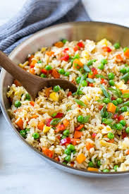

Rice and veggies

Description
Easy, healthy and fast. Rice is seen as a blunt dish, I can see why, but with some veggies added in the mix, I'm yet to find somebody who can refuse such a thing.
Given that it is made mainly from vegetables, its lack of meat show a healty balance for the more calories full meal served usually.
Ingredients
- rice 300g
- onion 1 medium/big piece
- garlic 5 cloves
- tomato sauce 400 ml
- bell pepper 100g
- carrot 150g
Steps
- cook the onion and garlic for 5 minutes
- add spieces (at your discretion)
- add the bell pepper, carrot and tomato sauce
- add 500 ml of whater
- let it cook for about 45-60 minutes
Homepage